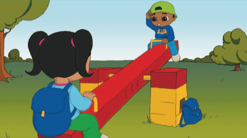

Camino a casa desde la escuela, Sam y Sara se detienen en los juegos. Sam y Sara se sientan en el balancín
y advierten que ese día algo es diferente: no suben ni bajan.
Sara permanece abajo y Sam permanece arriba. No importa lo fuerte que Sara intenta empujar desde el suelo:
ella no puede subir y Sam no puede bajar. Ambos se preguntan qué es diferente ese dÍa de cualquier otro.

¿Puedes ayudar a Sam y Sara a construir un balancín que sube y baja? ¡Veamos cómo se hace!
Construye el balancín utilizando las instrucciones. Pincha sobre la imagen para acceder a ellas.
• Asegúrate de que mantiene el equilibrio y sube y baja con suavidad
• Si no mantiene el equilibrio comprueba que el pivote esté en la posición correcta
• Si no se mueve suavemente, comprueba que las poleas amarillas no hagan fricción contra los ladrillos rojos
fijos
¿Equilibrio o Desequilibrio?
Si agregas peso (2x2 ladrillos) al balancín, mantendrá el equilibrio o se inclinará hacia uno de los dos lados.
Averigua y predice qué balancín mantendrá el equilibrio y cuál no.
A continuación, prueba las distintas posiciones de los ladrillos.
El equilibrio del balancín depende del tamaño del peso (masa) en cada extremo y la distancia del peso desde
el punto de pivote.
Pide a los niños que reflexionen sobre sus pruebas preguntándoles cosas como:
• ¿Qué has predicho que ocurriría y por qué?
• Describe lo que ha ocurrido.
• ¿Ha sido esta una prueba imparcial?
• Describe cómo funciona el modelo.
¿Equilibrio con un ladrillo?
Intenta predecir primero dónde colocar el ladrillo para hacer que el balancín mantenga el equilibrio.
A continuación, prueba a ver si lo que ocurre es lo que has predicho.